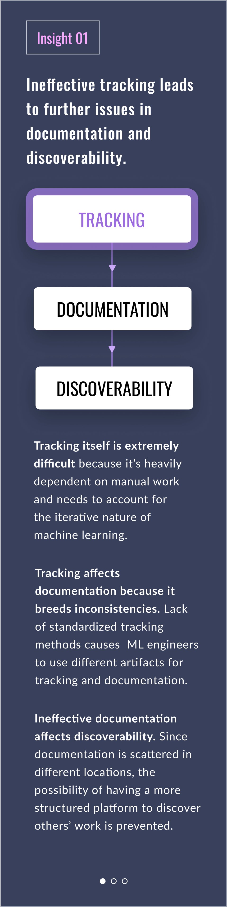
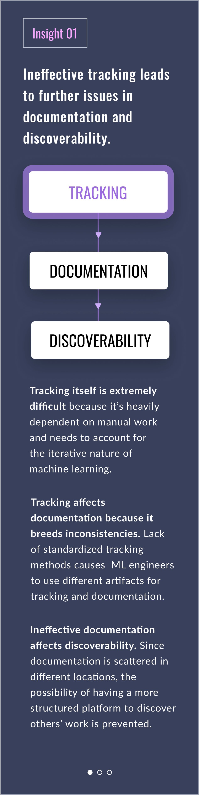

OverviewMachine learning was uncharted territory for all team members when we first began. In order to submerge ourselves in this space, we conducted in-depth primary and secondary research before meeting up with our stakeholders at Bloomberg. This included reviewing literature and interviewing Data Scientists, ML Engineers, and Project Managers.
With a shared machine learning language, we then conducted various research methods to try to understand and visualize where the biggest pain points were for our stakeholders and where we could bring the most value.
Research Goals
01
Understand the problem spaceGain an in-depth understanding of the realm of machine learning through primary research, secondary research, and taking online courses in machine learning.
02
Visualize workflows across teamsMap out a master workflow– the “happy path”– and identify where different teams diverge from this.
03
Identify pain points and opportunitiesPinpoint and quantify pain points in order to target areas where we could have the most impact for product managers and ML engineers.
04
Research through designTest out our assumptions and reframe the direction of the project through storyboarding and visual storytelling.
Domain knowledge
We analyzed four machine learning management software and provided a breakdown of the key features/capabilities offered.
Their features include:
i
Tracking (metrics, artifacts, success rates, start/end times of experiments)
ii
Reproducibility (ensuring experiments can be reproduced based on artifacts provided)
ii
Compare experiments (having a visual comparison what works and what doesn’t)
iii
Collaboration amongst teams (ability to see what members of the teams are currently working on to avoid duplication of efforts)
We understood from this that there isn’t a tool which effectively encompasses all the capabilities, raising two questions for our research in the space of experiment management at Bloomberg:
i
Are we designing into a white space or are we working on top of something pre-existing?
ii
What are the workarounds the engineers are currently adopting?
Faculty
We wanted to advance our knowledge of both machine learning and experiment management software by interviewing faculty at Carnegie Mellon University. We met with Professor Jason Hong to discuss various machine learning topics and Professor Majd Sakr to review a machine learning experiment management project from the Computer Science department.
Sakr found the experiment management process to be broad, so he recommended focusing on a specific area to provide targeted value. He also warned that our designs should be tested on the users who would be using the end product. These considerations helped throughout the rest of our research process.
Key finding from faculty interviews:
i
Machine learning experiments are highly complex and nuanced. Each experiment can be a replication of the previous one. Instead of trying to design for the entire workflow, it may be more beneficial to zoom in on one specific use case.
ii
Professor Hong challenged us to answer these questions in our research:
What do different teams do? What do they want to see differently from each other? Who manages the cluster? Who has the priority?
Model Users
After interviews with machine learning graduate students at Carnegie Mellon University, we discovered a gap between machine learning in academia vs. industry. In academia, there wasn’t a high demand for collaboration as students often worked in silos. Their experiments were also much smaller in scale and didn’t need to make robust documentations for reproducibility purposes. We kept these differences in mind as we synthesized the research.
Key findings from student interviews:
i
In academic ML, there is less emphasis on building stable production models and more on exploration.
ii
Student experiments were generally on a smaller scale and would not require as many resources.
iii
A smaller scale equates to less requirements for tracking metrics.
iv
Academic machine learning workflows were similar to industry in the artifacts and tools they used for exploratory research.
Building upon what we’d learned from professors and students, we read a handful of academic papers on machine learning experiment management to better understand the problem space. Our literature review was also used to discover existing pain points and varying perspectives.
We also reviewed literature from adjacent problem spaces that deal with tracking multiple moving parts of a complex system, such as healthcare. This was done to help broaden our perspective and create ideas outside of common practice.
Key Takeaways:
i
It is recommended to utilize different visualizations such as charts and scatterplots to compare experiment results and provide different perspectives of the data.
ii
Hierarchy is key. Organization of a project in file format allows for efficient access of results.
iii
Proliferation of ML brings to the forefront the need for systems that are responsible for managing models across their entire lifecycle.
Runway: machine learning model experiment management tool by Jason Tsay, Todd Mummert, Norman Bobroff, Alan Braz, Peter Westerink, Martin Hirzel
01Literature Review
We researched academic papers on machine learning experiment management to gain domain knowledge and better understand the problem space. The literature review was also used to discover existing pain points and varying perspectives.
Furthermore, we reviewed literature from adjacent problem spaces that deal with tracking multiple moving parts of a complex system, such as healthcare. This was done to help keep our perspective open and create ideas outside of common practices. The literature review also informed and reinforced our proposed pain points of the ML process.
There was one paper in particular that stood out to us. Its web-based dashboard summarized model performance in a bar chart as well as a scatterplot that displayed the relationships between hyperparameters and performance metrics.
Key Takeaways:
i
It is recommended to utilize different visualizations such as charts and scatterplots to compare experiment results and provide different perspectives of the data.
ii
Hierarchy is key. Organization of a project in file format allows for efficient access of results.
Runway: machine learning model experiment management tool by Jason Tsay, Todd Mummert, Norman Bobroff, Alan Braz, Peter Westerink, Martin Hirzel
02Interviews with Faculty & Model Users
Faculty
We aimed to further our domain knowledge in both Machine Learning and Experiment Management software by interviewing faculty at Carnegie Mellon. We interviewed Professor Jason Hong to discuss topics on Machine Learning and Professor Majd Sakr to review an ML experiment management project occuring in the Computer Science department.
Professor Sakr provided us with tips he learned from his projects which we kept in mind during our research phase. Sakr found the experiment management process to be broad so he recommended focusing on a specific area to provide strong targeted value. He also warned that the designs we test should be tested on the users who will be using the end product. These considerations helped us orient as we progressed into research.
Some findings:
i
Machine learning experiments are highly complex and nuanced. Each experiment can be the replication of the previous one. Instead of trying to design for the entire workflow, it may be more beneficial to zoom in on one specific use case.
ii
Professor Hong challenged us to answer these questions in our research:
What do different teams do? What do they want to see differently from each other? Who manages the cluster? Who has the priority?
Model Users
We then interviewed Machine Learning graduate students at Carnegie Mellon. These interviews provided us with a foundation early in the process in laying out the machine learning workflow.
We noticed there was a gap between Machine Learning in academia vs. industry. There wasn’t a high demand for collaboration as students often worked in silos. Their experiment sprints were smaller in scale in terms of amount of data collected.
Students also didn’t have to worry about production of their models. While keeping these differences in mind, the model user interviews provided us with useful domain knowledge of the ML workflow process.
Some findings:
i
In academic ML, there is less emphasis on building stable production models and more on exploration.
ii
Student experiments were generally on a smaller scale and would not require as many resources.
iii
A smaller scale equates to less requirements for tracking metrics.
iv
Academic Machine Learning workflows were similar to industry in the artifacts and tools they used for exploratory research.
03Competitive Analysis
In this section we analyzed 4 machine learning management software and provided a breakdown of the key features/capabilities offered. We have guild.ai, comet.ml, neptune.ai, and mlflow.org.
Their features include:
i
Tracking (metrics, artifacts, success rates, start/end times of experiments) Reproducibility (ensuring experiments can be reproduced based on artifacts provided)
ii
Compare experiments (having a visual comparison what works and what doesn’t)
iii
Collaboration amongst teams (ability to see what members of the teams are currently working on to avoid duplication of efforts)
From this, we gathered that there isn’t a tool that effectively encompasses all the capabilities. This raises two questions for our research in the space of experiment management at Bloomberg:
Are we designing into a white space or are we working on top of something pre-existing?
What are the workarounds the engineers are currently adopting?
Field Research in New York
OverviewWe took a trip to Bloomberg’s New York headquarters to meet our spotlight users, the Bloomberg engineers. It was our first time conversing with our users– learning about their job responsibilities, workflows, and challenges. Through face-to-face interaction, we were better able to immerse ourselves in the space they were working in, empathize with them, and establish rapport.
After meeting with more than 50 ML engineers across six teams in one day, we went back to Pittsburgh with pages and pages of notes.Meeting the UsersOur New York trip was an introduction to our target users, which allowed us to identify unknown areas that we needed to answer with subsequent research methods. This exercise was crucial for us to map out the core framework of the machine learning workflow, as well as the processes involved before and after the actual machine learning-related work.
What did we learn?
01Uncovered gaps and missing knowledge to fill in with further research.
02Identifed patterns among the artifacts used and challenges the teams faced.
03Pinpointed areas to probe deeper to find underlying needs.
04Mapped out the framework of the machine learning workflow.
Meeting the UsersOur New York trip was an introduction to our target users, which allowed us to identify unknown areas that we needed to answer with subsequent research methods. This exercise was crucial for us to map out the core framework of the machine learning workflow, as well as the processes involved before and after the actual machine learning-related work.Sense MappingNow it was time to make sense of our notes! Our team came together and ran several interpretation sessions to bounce ideas off of each other and fill in the knowledge gaps.
We color-coded our notes based on the different ML teams for sense mapping. This made it easier to see which emerging patterns were most prevalent among teams. We were now able to get a preliminary sense of the shared artifacts the teams used, points of divergence for the artifacts, and the challenges they faced.
The current state of machine learning management at Bloomberg is conducted on the Data Science Platform (DSP), the main function of which is to run ML experiments by connecting data and models with GPU, then displaying the results in logs.
In this diagram we give a synthesized analysis of the pain points and opportunities identified from semi-structured interviews, love letter/breakup letters, and surveys. The synthesized findings will drive our design for the future state.
Top pain points:
i
Lack of Experiment Comparison. DSP doesn’t allow for an easy way to visually compare different runs and experiments.
ii
Log files disappear. It is difficult for users to keep track of the experiment results because log files disappear after 21 days. This caused the engineers to use inconsistent artifacts to track their experiments across and within teams.
iii
Disorganized runs. Experiment homepage has pages and pages of experiments with no options to tag, filter, or search. In addition, the lack of information about the experiments makes it hard for users to view experiements at a glance.
iv
DSP is not integrated with other programs. Currently, there is a disconnect between the dataset, model, experiment results, and documentation--they’re almost like separate flows when they should be a cohesive part of the engineers’ workflow.
SYNTHESIS
Triangulation of research findings helped us uncover how tracking served as the foundation for effective documentation and discoverability. We took an in-depth look at tracking to pinpoint some challenges in each stage: Data, Code and Results.
With a shared machine learning language, we moved forward with generative research techniques to not only understand and visualize the biggest pain points for our stakeholders, but also identify insights that could bring the most value to them.
Insight 01Ineffective tracking leads to further issues in documentation and discoverability.
Learn more
Insight 01Ineffective tracking leads to further issues in documentation and discoverability.
Learn more
Insight 02The machine learning workflow is comprised of three interdependent components such as data, code, and results, which are all reliant on effective tracking.
Learn more
Insight 03Because of system limitations, machine learning engineers resort to developing their own workarounds to substitute workflow challenges.
Learn more
Insight 03Because of system limitations, machine learning engineers resort to developing their own workarounds to substitute workflow challenges.
Learn more
Insight 02The machine learning workflow is comprised of three interdependent components such as data, code, and results, which are all reliant on effective tracking.
Learn more
Moving ForwardHeading into our design phase, we wanted to use the generative research we’d conducted to determine which problems to solve. We divided these into three areas to further explore.How might we...
Tracking
01create a way for machine learning engineers to proactively capture dynamically changing datasets?
02use the knowledge of previously successful models to allow for better model selection?
03understand a model’s value in terms of performance vs time taken to inform future decisions?
Documentation
04facilitate the transfer of tracked artifacts so that the documentation process is expedited?
05provide a platform for engineers to build a portfolio and display their work?
06help stakeholders easily understand the documentation made by ML engineers?
Discoverability
07create a centralized encyclopedia where engineers can search for information on models already built?
08design a solution that’s scalable to encourage international collaboration?
09reduce the number of meetings as a direct result of better discoverability?


 
